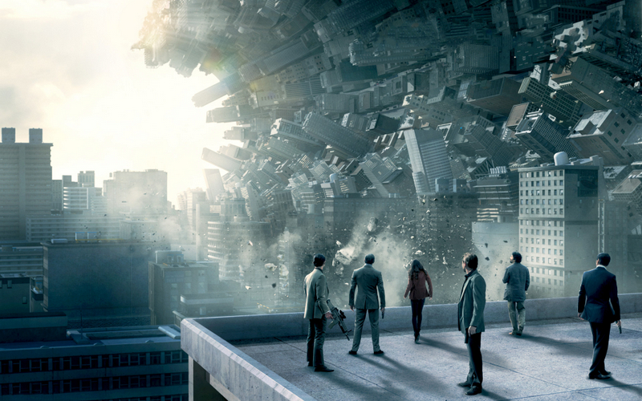

Origen , la creación de los sueños
Llega un momento en la carrera de todo director que parece prácticamente imposible que no le vayan a llover las críticas negativas en su siguiente trabajo. Da igual que la película sea buena o mala, porque siempre se podrá reivindicar a posteriori si el error es demasiado evidente, pero el daño ya está hecho. Y es que son muchos los realizadores que alcanzaron cotas de popularidad y/o reconocimiento crítico poco usuales durante sus primeros trabajos, pero, como en toda moda, llega un punto en el que ya no resulta novedoso y hay que atacar al ídolo del pasado para dejar espacio al que acaba de aparecer. Christopher Nolan ya consiguió esquivar este hecho con ‘El Caballero Oscuro’, pero ‘Origen‘ (‘Inception’) era la oportunidad ideal para despedazar a alguien cuya popularidad estaba yéndose más allá de lo permisible. Sin embargo, todos sabemos que no fue eso lo que pasó.
¿Cuál es el principal motivo de que el director de la inminente ‘El Caballero Oscuro: La Leyenda Renace‘ salera indemne? Habrá quien me diga que eso es mentira, que tuvo unas cuantas críticas negativas y hubo gente que la criticó bastante, pero del mismo modo que existen fans locos de Nolan, también existen los detractores irracionales (que serán menos, pero hay unos cuantos), y ‘Origen’ fue muy bien recibida, siendo un gran éxito económico y las críticas fueron mayoritariamente positivas. Está claro que la originalidad de su propuesta (tiene varios referentes obvios, pero siempre expandiendo las ideas en las que haya coincidencias más directas) para ser un blockbuster fue la principal clave para pillar desprevenidos a la gran mayoría.
Ya os comentaba en mi crítica de ‘El Caballero Oscuro’ que Nolan optó por alterar varios de los elementos que habían caracterizado su cine hasta entonces. Lo más importante era el hecho de renunciar a su querencia por los planos cerrados en benefició de dotar a la película de una espectacularidad mucho más marcada, lo cual no es óbice para que se trate de un proyecto personal: Ya en 2001 presentó una primera versión del mismo a Warner, pero el propio Nolan concluyó que necesitaba conocer los mecanismos de los blockbusters antes de poder abordar algo tan ambicioso como ‘Origen’. Por ello, fue escribiendo nuevas versiones del guión hasta que llegó el momento de la hora de la verdad: Tras acabar ‘El Caballero Oscuro’ decidió dedicar seis meses en exclusiva a finiquitar el guión de la película. También tenía claro que era imprescindible volver a contar con un presupuesto bastante amplio (160 millones de dólares), lo cual prácticamente le obligaba a volver a tirar de la espectacularidad como uno de los ejes motores de la película.
Lo curioso es que esta vez Nolan prefirió no grabar ninguna escena en IMAX de forma nativa, sino que prefirió optar por la VistaVision, el formato más cercano al IMAX (apenas hay 5mm de diferencia entre los 70 del primero y los 65 del segundo), pero sin tener que usar ese tipo de cámaras. Esto es algo que no afecta a ‘Origen’ en su condición de gran espectáculo, ya que Nolan cuidó con mimo todos los detalles, llegando a implicarse de forma directa incluso en las escenas en las que dependían de los efectos generados por ordenador (lo cierto es que hay más en ‘Batman Begins’ que aquí, por difícil que pueda parecerlo), lo cuales evitó siempre que pudo, ya que quería buscar el mayor realismo posible dentro de lo onírico de su propuesta.
Sobra decir que, como ya comentaba, en ‘Origen’ cuantos más planos abiertos mejor, ya que estos permiten a Nolan recrearse en la grandilocuencia de la película. No obstante, también tiene la oportunidad de explorar nuevos recursos como la utilización del ralentí para determinados momentos (Cobb cayendo en la bañera, la camioneta despeñándose, etc.) consiguiendo que su uso sea el más acertado que recuerdo. Además, se encarga de ir dejando multitud de pistas para que el espectador pueda ir atando cabos a poco que haya prestado atención a lo que ve en pantalla, llegando a hacer bastante inconcebible todo el debate que surgió en su momento.
Sin embargo, el gran mal de la película es que Nolan es consciente de las limitaciones de un numeroso sector del público, lo cual le llevó a excederse a la hora de dar explicaciones sobre lo que pasa en pantalla. Este es uno de los problemas que Nolan empezó a desarrollar, pero de forma mucho menos pronunciada (y molesta), en el caso de ‘El Caballero Oscuro’. Por mi parte, no me molesta tanto que en su primera hora nos expliquen varias veces los mecanismos de la creación de los sueños y qué hacer para meterse en ellos y modificarlos, ya que se hace de una forma inteligente, introduciendo varios detalles cada vez que dan sentido a esta reiteración. Lo cierto es que recuerda mucho a una película de atracos, en las que se va trazando el plan y hay que ir reclutando más gente para que todo vaya cogiendo forma.
Los problemas llegan a través de los diálogos, en especial una vez están completando su trabajo, ya que Nolan parece no confiar en que el espectador (o parte de ellos) se entere de las cosas sólo enseñándoselas, así que los personajes van añadiendo explicaciones, habitualmente redundantes, a lo que acaba de suceder, por qué ha pasado y cuál es la consecuencia potencial. Esto es algo que va ganando y ganando enteros hasta resultar un tanto excesivo en la resolución del trabajo. Lo curioso es que Nolan opta en el desenlace en jugar un poco con el público para ver si pica con un engaño que él mismo ha desbaratado con anterioridad, pero el resultado fueron debates tan acalorados como innecesarios.
Los sueños de origen
Recuerdo que cuando se estrenó ‘Origen’ hubo multitud de debate tanto sobre el desenlace como sobre la posibilidad de que Nolan nos hubiera tomado el pelo a todos disfrazando la película de una forma para ser realmente otra cosa. Podéis buscar vía google y encontraréis multitud de teorías que van desde lo que aún podría llegar a ser plausible hasta auténticos disparates sin pies ni cabeza. Y es algo que no entiendo, porque Christopher Nolan construye un universo de los sueños muy fácil de entender.
De hecho, esta racionalización de los sueños es algo que ciertos sectores han atacado con ahínco, ya que parece que es algo que sólo puede mostrarse de forma alocada y con muy poco sentido, siendo algo con lo que estoy tajantemente en contra, ya que esa es una de las bases del relato: El equipo de Cobb, más específicamente el arquitecto, diseña los sueños ajenos (o propios) a partir de la máquina que tienen a su disposición. La cuestión entonces sería aceptar la existencia de dicho dispositivo, en un recurso mimético a la máquina de Angier en ‘El Truco Final (El Prestigio)’. Esto es algo que se introduce de forma sencilla, por lo que no logro comprender las quejas ante sueños trucados.
Otro detalle sabiamente utilizado es el de los tótems, objetos que los personajes utilizan para saber que no están dentro de un sueño ajeno, pero que también ejerce un papel vital dentro del contacto con la realidad del protagonista, ya que el matiz de que anteriormente pertenecía a su esposa es tan revelador como que el resto de personajes juegue un papel casi anecdótico en el relato. Por lo demás, los sueños son el espacio en el que Nolan no pone límites a su grandilocuencia visual, sabiendo combinar la cámara lenta y el tiempo que pasa realmente en cada uno de los niveles del sueño a la hora de ir dando información al espectador. Además, el diseño de producción es deslumbrante (y la banda sonora es de Hans Zimmer es de las que marcan época), pero falla de forma notable en la ejecución de todo lo relacionado con el nivel de la nieve, una mutación entre lo confuso y lo poco estimulante.
Si una cosa ha demostrado Nolan a la hora de forjar los repartos de sus películas, esa es que es bastante fiel a aquellos intérpretes con los que ha conseguido una buena sintonía. Habrá quien piense en Christian Bale (yo me acuerdo más de Michael Caime, que aquí reincide en su rol habitual dentro del cine de Nolan) al leer esto, lo cual complica más el asunto de que Nolan llevaba multitud de años queriendo trabajar con Leonardo DiCaprio, pero éste siempre le había dado largas, pero el guión de ‘Origen’ fue demasiado suculento para dejarlo pasar. ¿Hubiese sido Bale el protagonista de haberse negado él? Quizá, pero ahora resulta imposible imaginar ‘Origen’ sin DiCaprio como Dom Cobb (seguro que no es casualidad el hecho de que el protagonista de ‘Following’ se llamase Cobb).
El resto del reparto es excepcional, pero el otro personaje clave es el de Marion Cotillard, que da vida a la esposa del protagonista. Recuerdo que cuando vi la película fue uno de los aspectos más problemáticos de ‘Origen’ para mí, pues la bipolaridad de su personaje, aunque justificada, llegaba a hacerse molesta. No es una queja hacia el estupendo trabajo de Cotillard teniendo que oscilar entre algo cercano al concepto de femme fatale, pero también como sufrida esposa que sólo quiere estar con su marido. Creía que ‘Origen’ no equilibraba bien la transición entre ambas opciones (como villana era muy esquemática y como esposa demasiado sufrida), ni tampoco daba suficiente fuerza a su personalidad. Sin embargo, admito que fue culpa de simple estupidez, algo que, como ya comenté, Nolan tiene en cuenta para dar una explicación directa de ello a través del diálogo cuando era algo que uno debería haber asimilado sin problemas, cosa que sucedió en este revisionado.
El resto del reparto viene a ser una consecuencia de la necesidad de entrar en los sueños ajenos, por lo que Cobb necesita un equipo integrado por un Joseph Gordon-Levitt que quizá hubiese merecido un poco más de cancha, pero que tiene con varios momentos de gran lucimiento (esa fenomenal pelea flotante), un Tom Hardy que derrocha carisma (sobre todo en sus críticas hacia el personaje de Gordon-Levitt) y encanto, Ken Watanabe cumple a la perfección como el que encarga el trabajo y Dileep Rao cumple con corrección en el que quizá sea el personaje menos interesante de la función (tiene una función básica y no aporta gran cosa más allá de eso).
He omitido a Ellen Page en el párrafo anterior porque su personaje tiene más riqueza y desarrollo pese a que se diluya un tanto en el tramo final. Y es que Ariadne es la representación del espectador dentro de ‘Origen’, ya que es la única que no está realmente familiarizada con lo que el protagonista pretende, así que a través de ella vamos descubriendo lo que nos espera en la segunda parte de la película. Es por ello que es la única a la que se le permite hacer verdaderos reproches a Cobb por sus secretos, ya que Nolan no sólo juega con el conocimiento del espectador, sino que, dudando e su inteligencia, le da un papel en la película: Fascínate, asimila detalles que muchos otros personajes desconocen y luego sigues siendo importante pero, por regla general, sólo estarás de fondo viendo cómo pasa todo. Page está estupenda en un papel muy difícil, ya que corría el peligro de ser algo tonta al principio, ralentizar la acción en la transición entre la creación del plan y la ejecución del mismo y dejar con la sensación de estar desaprovechada ya dentro de los sueños. Sin embargo, Page evita que nada de eso llegue a ser molesto y crea muy bien los vínculos emocionales entre sus personajes y el espectador.
En definitiva, ‘Origen’ es una película definida por su intento de ser un blockbuster original, pero que el máximo número de espectadores pueda disfrutar. Eso hace que esta entretenidísima cinta abuse de las explicaciones a través de los diálogos entre los personajes, anulando así su potencial para haberse convertido en el mejor trabajo de su director. Eso sí, un acabado técnico impecable, una puesta en escena casi siempre brillante (el tramo en la nieve es bastante mejorable) y un maravilloso trabajo del reparto compensan con creces sus defectos. El problema es que deja con algunas dudas sobre el futuro de Nolan, ya que su tendencia a la sobreexplicación alcanza aquí su máxima expresión, y eso puede ser bueno para llegar al público de inteligencia distraída, pero no tanto para la calidad final del producto.
